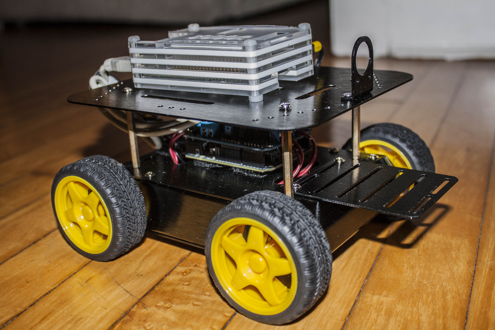

Cameron Fabbri
Masters Student
University of Minnesota, Department of Computer Science and Engineering
Email: cameronfabbri [at] gmail [dot] com
Github
Projects Page
Google Scholar
About Me
I am a Master's student at the University of Minnesota under the supervision of Junaed Sattar. I am a member of the Interactive Robotics and Vision Laboratory (IRVLAB). I concurrently work for the Air Force Research Laboratory Information Directorate as a Computer Scientist.Research Interests
My main research interests lie within in computer vision and deep learning, specifically for generative models. More can be seen on my projects page.Publications
 Cameron Fabbri, MD Jahidul Islam, Junaed Sattar
Cameron Fabbri, MD Jahidul Islam, Junaed Sattar
Enhancing Underwater Imagery using Generative Adversarial Networks
International Conference on Robitics and Automation (ICRA), 2018
[paper] [arxiv]
[github]
[project page]
[video]

Cameron Fabbri, Junaed Sattar
smartTalk: A Learning-based Framework for Natural Human-Robot Interaction
Computer and Robot Vision (CRV), 2016
[paper] [github]
[project page]